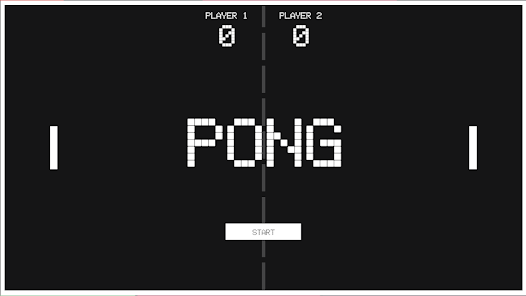
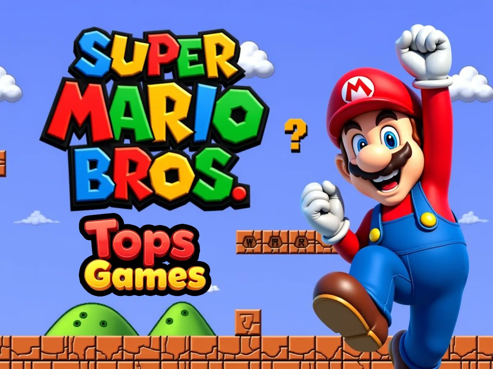
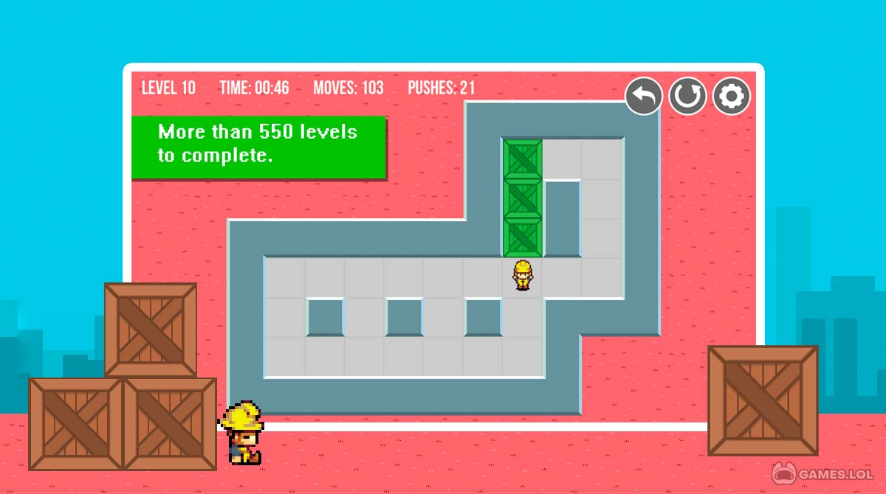
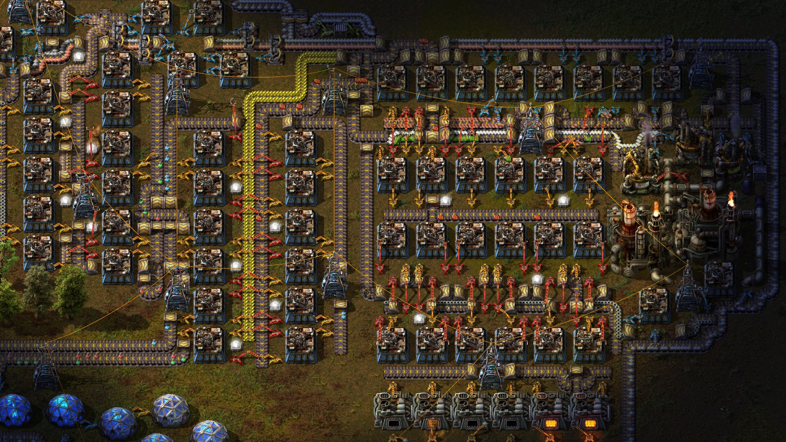

Juegos para Inspiración: De Mecánicas Simples a Sistemas Complejos
Esta lista está diseñada para guiar tu análisis de juego. Empieza por las mecánicas "Fáciles" y avanza para entender cómo se construyen los sistemas más complejos.
Nivel 1: Fácil (Prototipado Básico)

Pong
Analiza el control, la física simple y la detección de colisiones. Es la base de todo gameplay.

Flappy Bird
Estudia la curva de dificultad, la lógica del score y el feedback instantáneo de victoria/derrota.
Nivel 2: Medio (Estructura y Progresión)

Super Mario Bros
Examina el diseño de niveles, el power-up como progresión y los saltos como mecánica central.

Sokoban
Ideal para entender la interacción de reglas fijas y el diseño de puzzles que generan desafíos.
Nivel 3: Difícil (Interfaces y Sistemas RPG/Estrategia)

Stardew Valley
Analiza la gestión de tiempo/recursos, las interfaces complejas y los múltiples sistemas interconectados.

Factorio
Estudia el balance de recursos, la automatización y la progresión basada en nuevas mecánicas.